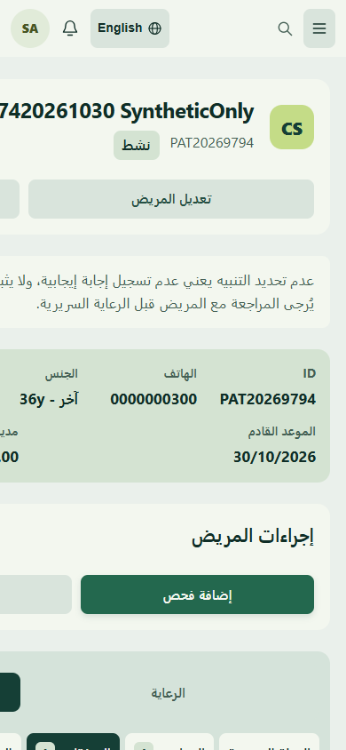
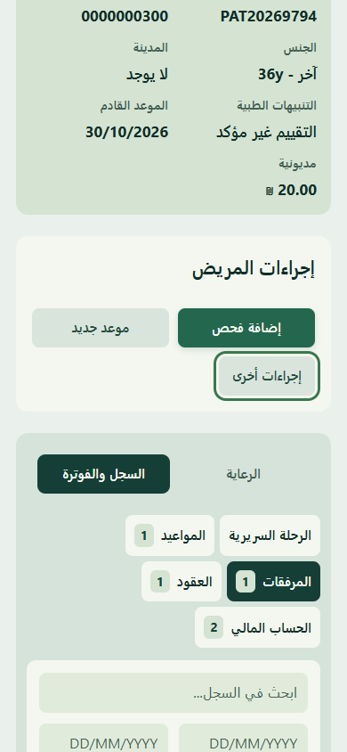
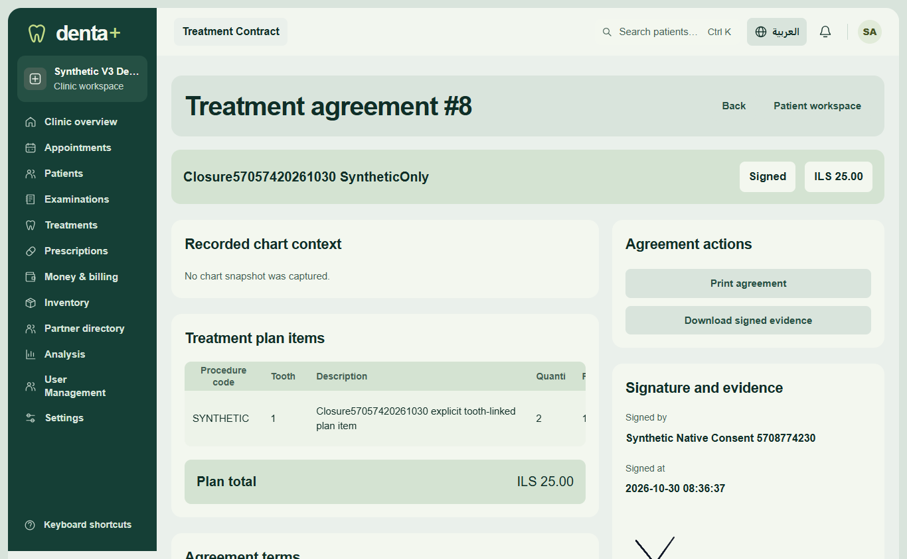

Actual authenticated CI4/Hostinger captures. All identities are disposable synthetic fixtures. This is scoped evidence, not universal Owner acceptance.
Final decision and cutover plan · Actual native receipts
Before: implicit690px grid placed MoreActions outside390pxviewport. After: three single-column tracks constrained; real menu/drawerkeyboard/Escape/focus passed EN/ARdesktop/mobile/tablet. No route/field/backend changes.


Canvas signaturePOST produced one signature and protected HTML attachment; checksum/access/immutability/recovery verified. No real consent or automaticclinicalbilling. Existing legalprint format retained.
